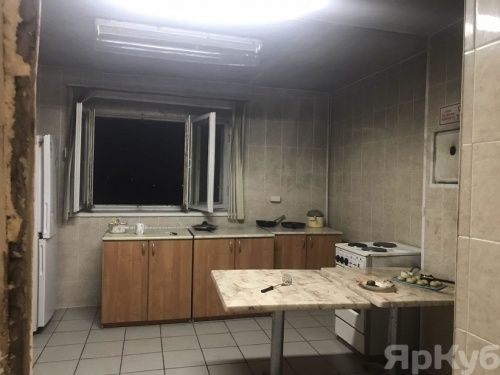
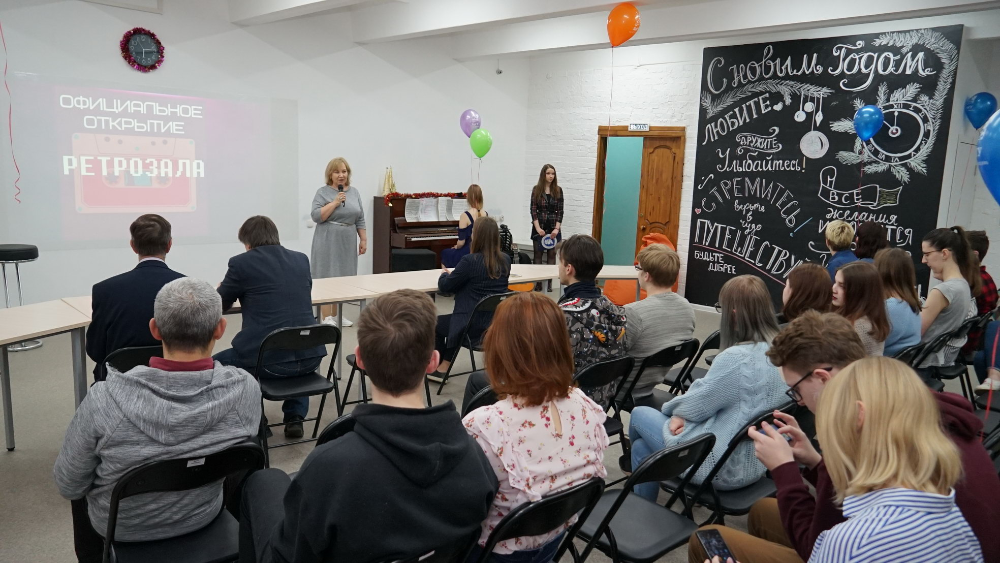
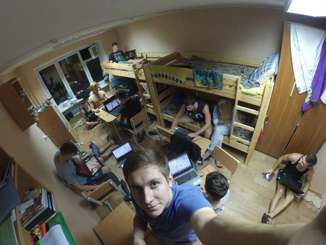

Университет располагает общежитием по адресу: ул. Союзная, дом 141.
Общежитие было построено в 1978 году. В настоящее время в общежитии проживает около 500 студентов.
Проезд до здания студгородка осуществляется автобусом маршрута 22с от Красной Площади.
Кухни
На кухнях студенты могут хранить свою еду и готовить её на плитах и духовках.
Ретро-зал и комната для спортивных занятий
В ретро-зале студенты могут отдохнуть от занятий в совместном досуге: играть в настольные игры, на пианино, или просто болтать!
В зале для спортивных занятий есть штанга для жима лежа, 2 теннисных стола с ракетками и мячами, гантели, турник.
Блоки и комнаты
В блоке есть два умывальника, общий туалет, бытовая комната. В каждом блоке 4 комнаты : 2 трехместные и 2 двухместные
